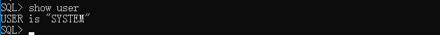
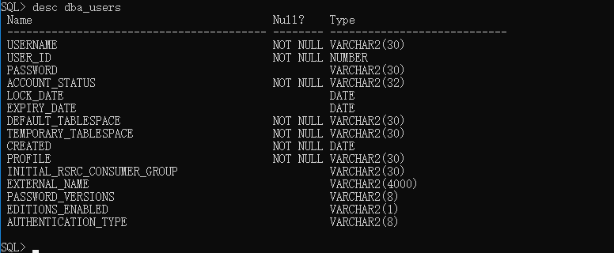
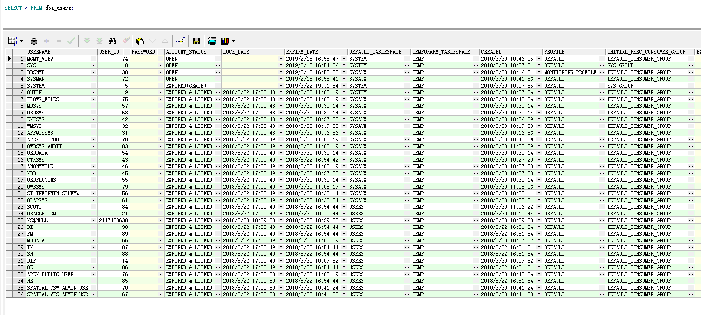
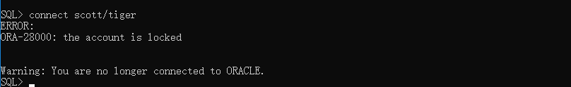
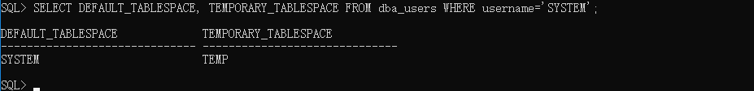
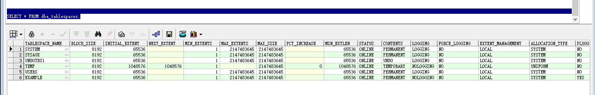

<!DOCTYPE HTML>
<html>
<head><meta name="generator" content="Hexo 3.8.0">
  <meta charset="utf-8">
  <meta http-equiv="pragma" content="no-cache">
  <meta http-equiv="cache-control" content="no-cache">
  <meta http-equiv="expires" content="0">
  
  <title>Oracle基础知识汇总 | 徐子辉的个人站点</title>
  <meta name="author" content="xuzh">
  
  <meta name="description" content="Oracle Database，又名Oracle RDBMS，或简称Oracle。是甲骨文公司的一款关系数据库管理系统。它是在数据库领域一直处于领先地位的产品。可以说Oracle数据库系统是目前世界上流行的关系数据库管理系统，系统可移植性好、使用方便、功能强，适用于各类大、中、小、微机环境。它是一种高效率、可靠性好的 适应高吞吐量的数据库解决方案。
对于开发来说，了解和学习Oracle数据库是非常有必要的。

这篇文章仅仅是对Oracle做了一个简单的总结，后续如果用到或接触到的知识点，都会做补充">
  
  
  <meta name="viewport" content="width=device-width, initial-scale=1, maximum-scale=1">

  <meta property="og:title" content="Oracle基础知识汇总">
  <meta property="og:site_name" content="徐子辉的个人站点">

  
    <meta property="og:image" content>
  

  
  
    <link href="/favicon.png" rel="icon">
  
  
  <link rel="stylesheet" href="/css/bootstrap.min.css" media="screen" type="text/css">
  <link rel="stylesheet" href="/css/font-awesome.css" media="screen" type="text/css">
  <link rel="stylesheet" href="/css/style.css" media="screen" type="text/css">
  <link rel="stylesheet" href="/css/responsive.css" media="screen" type="text/css">
  <link rel="stylesheet" href="/css/highlight.css" media="screen" type="text/css">
  <link rel="stylesheet" href="/css/google-fonts.css" media="screen" type="text/css">
  <!--[if lt IE 9]><script src="//html5shiv.googlecode.com/svn/trunk/html5.js"></script><![endif]-->

  <script src="/js/jquery-2.0.3.min.js"></script>

  <!-- analytics -->
  
<script>
  (function(i,s,o,g,r,a,m){i['GoogleAnalyticsObject']=r;i[r]=i[r]||function(){
  (i[r].q=i[r].q||[]).push(arguments)},i[r].l=1*new Date();a=s.createElement(o),
  m=s.getElementsByTagName(o)[0];a.async=1;a.src=g;m.parentNode.insertBefore(a,m)
  })(window,document,'script','//www.google-analytics.com/analytics.js','ga');
  ga('create', 'UA-70812759-1', 'auto');
  ga('send', 'pageview');
</script>


<script>
var _hmt = _hmt || [];
(function() {
  var hm = document.createElement("script");
  hm.src = "//hm.baidu.com/hm.js?cb5448498d7169c668b07c2b255d62c1";
  var s = document.getElementsByTagName("script")[0]; 
  s.parentNode.insertBefore(hm, s);
})();
</script>


</head>
</html>
 <body>  
  <nav id="main-nav" class="navbar navbar-inverse navbar-fixed-top" role="navigation">
    <div class="container">
      <button type="button" class="navbar-header navbar-toggle" data-toggle="collapse" data-target=".navbar-collapse">
		<span class="sr-only">Toggle navigation</span>
        <span class="icon-bar"></span>
        <span class="icon-bar"></span>
        <span class="icon-bar"></span>
      </button>
	  <a class="navbar-brand" href="/">徐子辉的个人站点</a>
      <div class="collapse navbar-collapse nav-menu">
		<ul class="nav navbar-nav">
		  
		  <li>
			<a href="/archives" title="All the articles.">
			  <i class="fa fa-archive"></i>Archives
			</a>
		  </li>
		  
		  <li>
			<a href="/categories" title="All the categories.">
			  <i class="fa fa-folder"></i>Categories
			</a>
		  </li>
		  
		  <li>
			<a href="/tags" title="All the tags.">
			  <i class="fa fa-tags"></i>Tags
			</a>
		  </li>
		  
		  <li>
			<a href="/about" title="About me.">
			  <i class="fa fa-user"></i>About
			</a>
		  </li>
		  
		</ul>
      </div>
    </div> <!-- container -->
</nav>
<div class="clearfix"></div>

  <div class="container">
  	<div class="content">
    	 


	
		<div class="page-header">
			<h1> Oracle基础知识汇总</h1>
		</div>
	


<div class="row post">
	<!-- cols -->
	
	<div id="top_meta"></div>
	<div class="col-md-9">
	

	<!-- content -->
	<div class="mypage">		
	  		

	  <p>Oracle Database，又名Oracle RDBMS，或简称Oracle。是甲骨文公司的一款关系数据库管理系统。它是在数据库领域一直处于领先地位的产品。可以说Oracle数据库系统是目前世界上流行的关系数据库管理系统，系统可移植性好、使用方便、功能强，适用于各类大、中、小、微机环境。它是一种高效率、可靠性好的 适应高吞吐量的数据库解决方案。</p>
<p>对于开发来说，了解和学习Oracle数据库是非常有必要的。</p>
<blockquote>
<p>这篇文章仅仅是对Oracle做了一个简单的总结，后续如果用到或接触到的知识点，都会做补充</p>
</blockquote>
<a id="more"></a>
<hr>
<h5 id="⚪查看登陆的用户"><a href="#⚪查看登陆的用户" class="headerlink" title="⚪查看登陆的用户"></a>⚪查看登陆的用户</h5><p>show user 命令</p>
<figure class="highlight plain"><table><tr><td class="gutter"><pre><span class="line">1</span><br></pre></td><td class="code"><pre><span class="line">SQL&gt; show user</span><br></pre></td></tr></table></figure>
<p></p>
<h5 id="⚪dba-users-数据字典"><a href="#⚪dba-users-数据字典" class="headerlink" title="⚪dba_users 数据字典"></a>⚪dba_users 数据字典</h5><p>通过 dba_users 这个表查看登陆的用户信息，那么在查询之前我们先看看 dba_users 这个表的表结构，可以通过 <code>desc dba_users</code> 这个命令查看指定表的表结构</p>
<figure class="highlight plain"><table><tr><td class="gutter"><pre><span class="line">1</span><br></pre></td><td class="code"><pre><span class="line">SQL&gt; desc dba_users</span><br></pre></td></tr></table></figure>
<p></p>
<p>可看到该表结构中包含用户名、用户的ID和密码等内容</p>
<p>现在我们查看系统中用户的信息<br><figure class="highlight plain"><table><tr><td class="gutter"><pre><span class="line">1</span><br></pre></td><td class="code"><pre><span class="line">select * from dba_users;</span><br></pre></td></tr></table></figure></p>
<p></p>
<blockquote>
<p>Oracle中 dba_users 和 user_users 都可以查询用户的信息，这两张表都是查看表空间信息的表，它们的区别是：前者是只供管理员用户查询的，后者是管理员用户和普通用户都可以查询的。</p>
</blockquote>
<h5 id="⚪几个典型的用户说明"><a href="#⚪几个典型的用户说明" class="headerlink" title="⚪几个典型的用户说明"></a>⚪几个典型的用户说明</h5><p>Oracle中有那么几个典型的用户，它们是在安装Oracle的时候默认创建的，分别具有不同的作用。下面我们介绍Oracle中sys,system,scott,hr用户：</p>
<ul>
<li>scott 是个演示用户，是让你学习Oracle用的；</li>
<li>hr用户是个示例用户，是在创建数据库时选中“示例数据库”后产生的，实际就是模拟一个人力资源部的数据库；</li>
<li>SYSDBA 不是用户，可以认为是个权限，超级权限。默认中sys就拥有这种超级权限，是权限最高的用户。</li>
</ul>
<p>超级用户分两种 SYSDBA和SYSOPT<br>SYSOPT 后面3个字母是operator的意思，也就是操作数据库的人，而SYSDBA 则是管理数据库的人;<br>SYSDBA比SYSOPT的权限还要大，而SYS用户就完全是个SYSDBA，但SYSTEM用户默认是SYSOPT，不过它也能以SYSDBA的权限登陆。</p>
<p>它们之间的不同之处可以下载<a href="Oracle中sys-system-scott-hr用户的区别.doc">Oracle中sys-system-scott-hr用户的区别</a> 这份文档了解学习。</p>
<h5 id="⚪启动（解锁）被锁定的用户"><a href="#⚪启动（解锁）被锁定的用户" class="headerlink" title="⚪启动（解锁）被锁定的用户"></a>⚪启动（解锁）被锁定的用户</h5><p>Oracle中有个scott用户默认是被锁定的</p>
<p></p>
<p>如果要解锁它，我们首先需要登陆其他用户，并通过SQL语句<code>alter user scott account unlock;</code>解锁它。</p>
<figure class="highlight plain"><table><tr><td class="gutter"><pre><span class="line">1</span><br></pre></td><td class="code"><pre><span class="line">alter user scott account unlock;</span><br></pre></td></tr></table></figure>
<blockquote>
<p>scott用户的默认密码为 tiger</p>
</blockquote>
<p>接下来通过 ‘connect scott/tiger’ 来登陆scott用户。如果scott用户密码过期的话，系统会提示你更改密码</p>
<p></p>
<p>或者通过SQL语句更改scott用户的密码</p>
<figure class="highlight plain"><table><tr><td class="gutter"><pre><span class="line">1</span><br></pre></td><td class="code"><pre><span class="line">alter user scott identified by tiger;</span><br></pre></td></tr></table></figure>
<h5 id="⚪表空间"><a href="#⚪表空间" class="headerlink" title="⚪表空间"></a>⚪表空间</h5><h6 id="表空间的分类"><a href="#表空间的分类" class="headerlink" title="表空间的分类"></a>表空间的分类</h6><ul>
<li>永久表空间  存放永久性数据，如表，索引等。</li>
<li>临时表空间  不能存放永久性对象，用于保存数据库排序，分组时产生的临时数据。</li>
<li>UNDO表空间  保存数据修改前的镜象。</li>
</ul>
<h6 id="查看用户的表空间"><a href="#查看用户的表空间" class="headerlink" title="查看用户的表空间"></a>查看用户的表空间</h6><p>在前面我们提到的 dba_users 表中有两个字段</p>
<ol>
<li>DEFAULT_TABLESPACE</li>
<li>TEMPORARY_TABLESPACE</li>
</ol>
<p>这两个字段分别代表用户的默认表空间和临时表空间。</p>
<p>比如我们要查看system用户的默认表空间和临时表空间</p>
<p></p>
<h6 id="查看表空间的信息"><a href="#查看表空间的信息" class="headerlink" title="查看表空间的信息"></a>查看表空间的信息</h6><p>这里有两张表</p>
<ol>
<li>dba_tablespaces</li>
<li>user_tablespaces</li>
</ol>
<p>这两张表都是查看表空间信息的表，它们的区别是：前者是只供管理员用户查询的，后者是管理员用户和普通用户都可以查询的。</p>
<p></p>
<h6 id="更改我们指定用户的默认表空间或者临时表空间"><a href="#更改我们指定用户的默认表空间或者临时表空间" class="headerlink" title="更改我们指定用户的默认表空间或者临时表空间"></a>更改我们指定用户的默认表空间或者临时表空间</h6><figure class="highlight plain"><table><tr><td class="gutter"><pre><span class="line">1</span><br></pre></td><td class="code"><pre><span class="line">ALTER USER username DEFAULT|TEMPORARY TABLESPACE tablespace_name;</span><br></pre></td></tr></table></figure>
<h6 id="新建表空间"><a href="#新建表空间" class="headerlink" title="新建表空间"></a>新建表空间</h6><figure class="highlight plain"><table><tr><td class="gutter"><pre><span class="line">1</span><br></pre></td><td class="code"><pre><span class="line">CREATE [TEMPORARY] TABLESPACE tablespace_name TEMPFILE|DATAFILE &apos;xxx.dbf&apos; SIZE xxx;</span><br></pre></td></tr></table></figure>
<p>表空间创建完毕后，我们可以查看表空间的位置在哪，比如我们查看表空间名称为SYSTEM的位置</p>
<figure class="highlight plain"><table><tr><td class="gutter"><pre><span class="line">1</span><br></pre></td><td class="code"><pre><span class="line">SELECT file_name FROM dba_data_files WHERE tablespace_name=&apos;SYSTEM&apos;;</span><br></pre></td></tr></table></figure>
<p>注意，如果要查看创建的临时表空间的数据文件的地址，就不能查表 dba_data_files 了，而要查 dba_temp_file 表。</p>
<figure class="highlight plain"><table><tr><td class="gutter"><pre><span class="line">1</span><br></pre></td><td class="code"><pre><span class="line">SELECT file_name FROM dba_temp_files WHERE tablespace_name=&apos;TEMPORARY_TABLESPACE&apos;;</span><br></pre></td></tr></table></figure>
<h6 id="修改表空间的状态"><a href="#修改表空间的状态" class="headerlink" title="修改表空间的状态"></a>修改表空间的状态</h6><p>设置表空间的联机或脱机状态</p>
<figure class="highlight plain"><table><tr><td class="gutter"><pre><span class="line">1</span><br></pre></td><td class="code"><pre><span class="line">ALTER TABLESPACE tablespace_name ONLINK|OFFLINK;</span><br></pre></td></tr></table></figure>
<p>设置表空间的只读或可读写的状态</p>
<figure class="highlight plain"><table><tr><td class="gutter"><pre><span class="line">1</span><br></pre></td><td class="code"><pre><span class="line">ALTER TABLESPACE tablespace_name READ ONLY|READ WRITE;</span><br></pre></td></tr></table></figure>
<blockquote>
<p>表空间为脱机状态，那么系统不允许修改该表空间的读写状态。表空间联机的状态，默认该表空间为可读写的状态。</p>
</blockquote>
<h6 id="修改表空间中的数据文件"><a href="#修改表空间中的数据文件" class="headerlink" title="修改表空间中的数据文件"></a>修改表空间中的数据文件</h6><p>增加数据文件</p>
<figure class="highlight plain"><table><tr><td class="gutter"><pre><span class="line">1</span><br></pre></td><td class="code"><pre><span class="line">ALTER TABLESPACE tablespace_name ADD DATAFILE|TEMPFILE &apos;xxx.dbf&apos; SIZE xxx;</span><br></pre></td></tr></table></figure>
<p>删除数据文件</p>
<figure class="highlight plain"><table><tr><td class="gutter"><pre><span class="line">1</span><br></pre></td><td class="code"><pre><span class="line">ALTER TABLESPACE tablespace_name DROP DATAFILE &apos;filename.dbf&apos;;</span><br></pre></td></tr></table></figure>
<h6 id="删除表空间"><a href="#删除表空间" class="headerlink" title="删除表空间"></a>删除表空间</h6><figure class="highlight plain"><table><tr><td class="gutter"><pre><span class="line">1</span><br></pre></td><td class="code"><pre><span class="line">DROP TABLESPACE tablespace_name [INCLUDING CONTENTS];</span><br></pre></td></tr></table></figure>
<p>如果只删除表空间而不删除数据文件，那么不用加上[]里面的内容。</p>
<h5 id="⚪约束"><a href="#⚪约束" class="headerlink" title="⚪约束"></a>⚪约束</h5><p>数据的完整性用于确保数据库数据遵从一定的商业和逻辑规则。在Oracle中，数据完整性可以使用约束、触发器、应用程序（过程、函数）三种方法来实现，在这三种方法中，因为约束易于维护，并且具有最好的性能，所以作为维护数据完整性的首选。</p>
<p>约束用于确保数据库数据满足特定的商业规则。在Oracle中，约束包括：not null、unique、primary key， foreign key和check五种。</p>
<ul>
<li>not null（非空）<br>如果在列上定义了not null，那么当插入数据时，必须为列提供数据。</li>
<li>unique（唯一）<br>当定义了唯一约束后，该列值是不能重复的，但是可以为null。</li>
<li>primary key（主键）<br>用于唯一的标识表行的数据，当定义主键约束后，该列不但不能重复而且不能为NULL。一张表最多只能有一个主键，但是可以由多个unique约束。</li>
<li>foreign key（外键）<br>用于定义主表和从表之间的关系，外键约束要定义在从表上，主要则必须具有主键约束或是unique约束，当定义外键约束后，要求外键列数据必须在主表的主键列存在或是为NULL。</li>
<li>check<br>用于强制行数据必须满足的条件，假定在sal列上定义了check约束，并要求sal列值在1000～2000之间，如果不在1000～2000之间就会提示出错。</li>
</ul>
<h5 id="⚪修改表名"><a href="#⚪修改表名" class="headerlink" title="⚪修改表名"></a>⚪修改表名</h5><figure class="highlight plain"><table><tr><td class="gutter"><pre><span class="line">1</span><br></pre></td><td class="code"><pre><span class="line">ALTER TABLE 旧表名 RENAME TO 新表名;</span><br></pre></td></tr></table></figure>	  
	</div>

	<div>
  	<center>
	<div class="pagination">

    
    
    <a href="/2019/03/26/Java基础知识小结/" type="button" class="btn btn-default"><i class="fa fa-arrow-circle-o-left"></i> Prev</a>
    

    <a href="/" type="button" class="btn btn-default"><i class="fa fa-home"></i>Home</a>
    
    <a href="/2019/03/15/Oracle实现DBLink/" type="button" class="btn btn-default ">Next<i class="fa fa-arrow-circle-o-right"></i></a>
    

    
</div>

    </center>
	</div>
	
	<!-- comment -->
	
<section id="comment">
    <h2 class="title">Comments</h2>

    
</section>


	</div> <!-- col-md-9/col-md-12 -->
		
	
	<div id="side_meta">
		<div class="col-md-3" id="post_meta"> 

	<!-- date -->
	
	<div class="meta-widget">
	<i class="fa fa-clock-o"></i>
	2019-03-15 
	</div>
	

	<!-- categories -->
    
	<div class="meta-widget">
	<a data-toggle="collapse" data-target="#categorys"><i class="fa fa-folder"></i></a>	
    <ul id="categorys" class="tag_box list-unstyled collapse in">
          
  <li>
    </li><li><a href="/categories/数据库/">数据库<span>9</span></a></li>
  

    </ul>
	</div>
	

	<!-- tags -->
	
	<div class="meta-widget">
	<a data-toggle="collapse" data-target="#tags"><i class="fa fa-tags"></i></a>		  
    <ul id="tags" class="tag_box list-unstyled collapse in">	  
	    
  <li><a href="/tags/Oracle/">Oracle<span>5</span></a></li>
    </ul>
	</div>
		

	<!-- toc -->
	<div class="meta-widget">
	
	</div>
	
    <hr>
	
</div><!-- col-md-3 -->

	</div>
		

</div><!-- row -->


	</div>
  </div>
  <div class="container-narrow">
  <footer> <p>
  &copy; 2019 xuzh
  
      with help from <a href="http://hexo.io/" target="_blank">Hexo</a>,<a href="http://github.com/wzpan/hexo-theme-freemind/">Freemind</a>,<a href="http://getbootstrap.com/" target="_blank">Twitter Bootstrap</a> and <a href="http://getbootstrap.com/" target="_blank">BOOTSTRA.386</a>. 
     <br> Theme by <a href="http://github.com/wzpan/hexo-theme-freemind/">Freemind.386</a>.    
</p>
 </footer>
</div> <!-- container-narrow -->
  


  
<a id="gotop" href="#">   
  <span>⬆︎TOP</span>
</a>

<script src="/js/jquery.imagesloaded.min.js"></script>
<script src="/js/gallery.js"></script>
<script src="/js/bootstrap.min.js"></script>
<script src="/js/main.js"></script>
<script src="/js/search.js"></script> 


<link rel="stylesheet" href="/fancybox/jquery.fancybox.css" media="screen" type="text/css">
<script src="/fancybox/jquery.fancybox.pack.js"></script>
<script type="text/javascript">
(function($){
  $('.fancybox').fancybox();
})(jQuery);
</script>


   <script type="text/javascript">      
     var search_path = "search.xml";
	 if (search_path.length == 0) {
	 	search_path = "search.xml";
	 }
	 var path = "/" + search_path;
     searchFunc(path, 'local-search-input', 'local-search-result');
   </script>

</body>
   </html>
